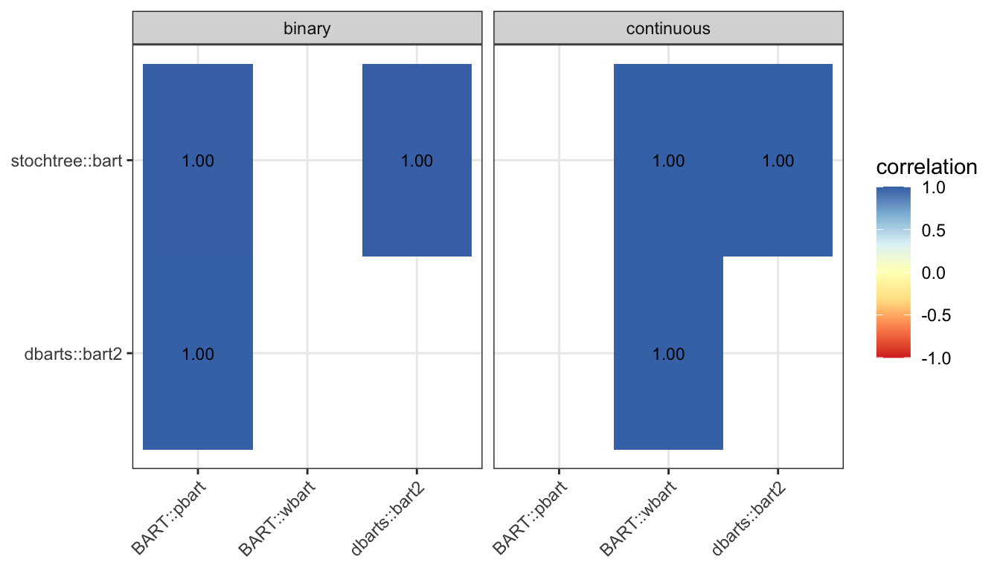
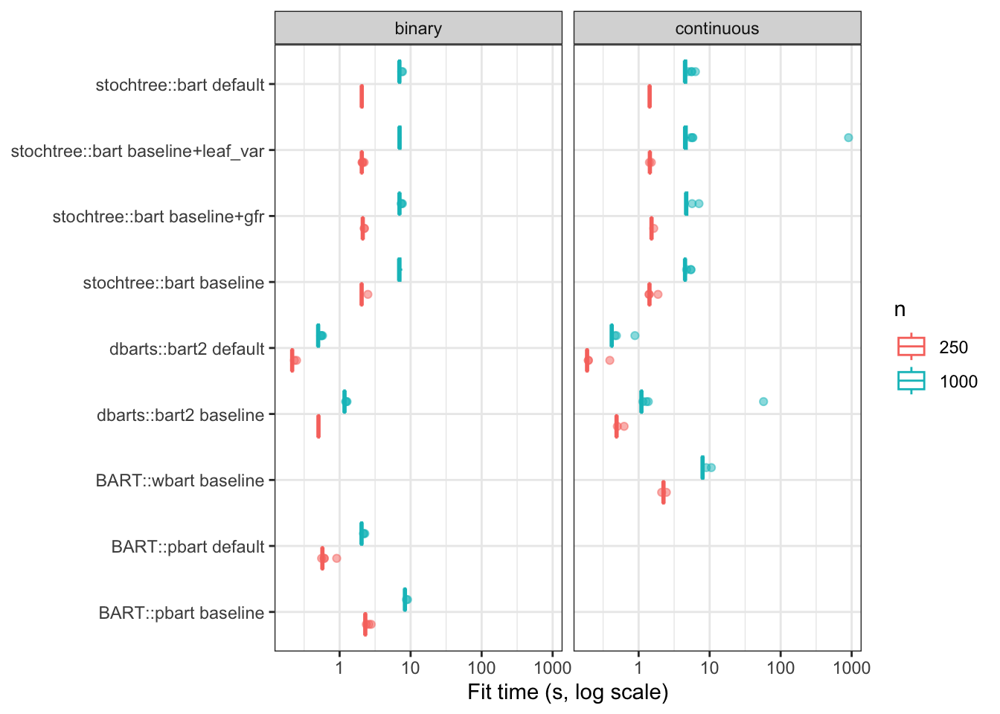

This document compares predictions from several Bayesian Additive Regression Tree (BART) packages in R. Specific “engines” from each of these packages are consider over binary and real valued response data. Each engine has some different parameter settings. The packages considered are
BART with wbart/pbart for real/binary-valued responses
dbarts with bart2 (equivalent to bart with a different API)
stochtree with bart
A baseline engine is implemented for the above methods which attempts to match hyperprior specification across the methods, for a fair comparison.
When the baseline differs significantly from the default settings of the method, we also test a default engine.
For stochtree we also run a baseline+gfr engine where stochtree’s own warm-start default turned back on (we turn it off for the baseline because the other methods don’t have this). Similarly, baseline+leaf_var turns leaf-variance sampling back on (sample_sigma2_leaf = TRUE) with everything else left at baseline, isolating just that one setting’s effect (see Section 3).
Two packages supported by tidytreatment that are not becnhmarked here are stan4bart and bartCause. Random effects are tested in an alternative benchmark, benchmark-prediction-rfx.qmd, where stan4bart does appear, it is specifically designed for this setting. Whilst, bartCause is for causal inference and estimating treatment effects which is also tested in a different benchmark, benchmark-causal.qmd. Neither package has a vanilla-prediction-only mode anyway.
The data-generating process is Friedman’s function (Friedman 1991), the field-standard benchmark for BART methods, used here in both a continuous and a probit-transformed binary version. See R/dgp.R for the exact definitions, and for how “true probability” is defined for the binary variant.
For the baseline models, most of the hyperprior parameter specification is trivial to match across engines. However, some hyperpriors are chosen based on the data itself (more or less an empirical Bayes decision).
Tree-structure prior
Naming conventions for the prior on trees differ across packages: alpha = base and beta=power.
These control the prior probability that a node at depth d splits further: P(\text{split at depth } d) = \alpha (1+d)^{-\beta}. These are constants, passed unchanged to whichever argument name each package uses.
Leaf-shrinkage prior
Each leaf’s contribution gets a N(0, \tau^2) prior, with \tau set from k (the number of prior standard deviations a leaf is expected to sit from the boundary of y’s range) and the number of trees:
\tau = \begin{cases}
\dfrac{\max(y) - \min(y)}{2k\sqrt{\texttt{n\_trees}}} & \text{continuous outcome - uses the data's own range} \\[8pt]
\dfrac{3}{k\sqrt{\texttt{n\_trees}}} & \text{binary outcome - calibrated to the probit latent's } \pm 3 \text{ range instead}
\end{cases}
Some differences between packages:
BART/dbarts calculate \tau internally from the user-specified k argument.
stochtree requires the specification of \tau directly. It also standardizes continuous outcomes internally, so it requires the \tau^2 to be specified on this standardized scale instead — we calculate the standardisation manually with \tau^2 / \text{var}(y).
Global error-variance prior
Note
The follow applies to the real-valued response only.
The residual variance \sigma^2 has an inverse-gamma prior, \sigma^2 \sim \text{Inv-Gamma}(\alpha, \beta), with shape \alpha = \nu / 2 set from \nu =sigdf degrees of freedom1.
In the baseline engines, we follow the precedent of BART. An intermediate quantity \lambda is calibrated from the data so that the prior places sigquant probability below a rough, data-driven estimate of \sigma itself, giving the scale \beta:
\beta = \frac{\nu \lambda}{2}, \qquad
\lambda = \hat\sigma^2 \cdot \frac{\chi^2_{\nu,\,1 - \texttt{sigquant}}}{\nu}, \qquad
\hat\sigma = \begin{cases}
\hat\sigma_\text{LM-MLE} & \text{if}~n > p,\\
\hat\sigma_y & \text{otherwise},
\end{cases}
where \chi^2_{\nu,\,p} is the p-quantile of a \chi^2_\nu distribution, where \hat\sigma_\text{LM-MLE} is the residual SD of a linear fit regressing the response against the covariates, and where \hat\sigma_y is the standard deviation of the data y.
The packages do the following:
BART/dbarts compute \hat\sigma, \lambda, and this inverse-gamma prior internally when sigest argument is left at its default.
stochtree has no equivalent default-calibration of its own. It uses an improper flat prior on \sigma^2 by default (shape = scale = 0). Matching it means passing stochtree’s own shape/scale arguments directly, on its internally-standardized scale:
The default engine uses each package’s own out-of-the-box hyperprior settings (tree-structure prior, leaf-shrinkage prior, global error-variance prior) instead, while holding everything else constant: burn-in, posterior draws, and number of chains fixed at the same values as baseline. Note that
stochtree’s warm-start setting is turned off (unlike its default).
We rerun stochtree with the baseline settings and the warm-start under the baseline+gfr engine.
We rerun stochtree with the baseline settings and the an unknown leaf variance under the baseline+leaf_var engine.
BART::wbart has no default row. The defaults for this engine are already identical to this benchmark’s baseline.
The following engines’ defaults differ from baseline as:
BART::pbart: ntree = 50 (vs 200) - the tree-structure and leaf-shrinkage priors are otherwise identical to baseline.
dbarts::bart2: n.trees = 75 (vs 200) and k = NULL. For the continuous case k = NULL sets k=2 (like the default), whilst for the binary case uses a hyperprior. See ?dbarts::bart2 for more information.
stochtree::bart: num_trees/alpha/beta already match baseline. Unlike BART/dbarts, the stochtree default assigns a hyperprior to the variance of the leaf values. In the continuous case the global error-variance prior also reverts to the improper shape = scale = 0 described above.
These plots show the first replication for n = 1000 (the largest value tested), comparing each engine’s posterior mean fitted value against the known ground truth.
Code
res$examples %>%filter(outcome =="continuous") %>%ggplot(aes(x = truth, y = fitted)) +geom_abline(slope =1, intercept =0, colour ="grey60", linetype ="dashed") +geom_point(alpha =0.4, size =0.8) +facet_wrap(~paste(engine, variant), nrow =2) +labs(title ="Continuous outcome", x ="True value", y ="Posterior mean fitted value") +theme_bw()
res$agreement %>%group_by(outcome, engine_a, engine_b) %>%summarise(mean_correlation =mean(correlation), .groups ="drop") %>%ggplot(aes(x = engine_a, y = engine_b, fill = mean_correlation)) +geom_tile() +geom_text(aes(label =sprintf("%.2f", mean_correlation)), size =3) +facet_wrap(~outcome) +scale_fill_distiller(palette ="RdYlBu", direction =1, limits =c(-1, 1)) +labs(x =NULL, y =NULL, fill ="correlation") +theme_bw() +theme(axis.text.x =element_text(angle =45, hjust =1))

Runtime
The box plot below shows the full per-replication fit-time distribution on a log scale.
Code
res$metrics %>%ggplot(aes(x =paste(engine, variant), y = fit_time_sec, colour =factor(n))) +geom_boxplot(outlier.alpha =0.5) +facet_wrap(~outcome) +coord_flip() +scale_y_log10() +labs(x =NULL, y ="Fit time (s, log scale)", colour ="n") +theme_bw()

Flags
This table lists rows whose RMSE is a statistical outlier (|z| > 2) within its own DGP setting. A flagged row is worth a closer look, but is not necessarily a bug - see flag_outliers() in R/metrics.R for an important caveat about how unreliable z-scores can be within a small group.
The back-end of this document uses a do.call(engine_fn, c(list(...), hp_to_*(hp))) layer (see R/fit-engines-prediction.R), so that the hyperparameters can be called from a single location (see R/hyperparams.R).
The below block below gives the equivalent direct call for each engine, followed by a check (click to expand) that builds the same call from the hp object to verify it against what do.call() actually constructs.
Code
set.seed(params$seed)n_demo <-300X_demo <-as.data.frame(matrix(runif(n_demo *10), ncol =10))colnames(X_demo) <-paste0("x", 1:10)y_demo <-friedman_f(X_demo) +rnorm(n_demo)y_demo_bin <-rbinom(n_demo, 1, 0.5)check_equivalent <-function(label, user_call_args, operative_args) { ok <-identical(user_call_args[order(names(user_call_args))], operative_args[order(names(operative_args))])if (!ok) {cat(sprintf("%-28s DOES NOT MATCH - doc is out of date\n", label)) }invisible(ok)}
Friedman, Jerome H. 1991. “Multivariate Adaptive Regression Splines.”The Annals of Statistics 19 (1): 1–67.
Footnotes
This may be referred to as a “scaled inverse-chi-squared(\nu, \lambda)”, here we match stochtree’s arguments names shape/scale, which is in terms of an inverse-gamma↩︎